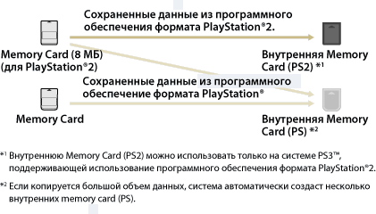

Игра > Воспроизведение программного обеспечениея формата PlayStation®2 и PlayStation® > Использование данных, сохраненных на Memory Card
Использование данных, сохраненных на Memory Card
Для использования данных, сохраненных на Memory Card (8 МБ) (для PlayStation®2) или на карте Memory Card, для игры следует скопировать данные на внутреннюю Memory Card на жестком диске. Для копирования данных необходимо использовать адаптер Memory Card (продается отдельно).
Примечания
- В системе PS3™ некоторое программное обеспечение формата PlayStation®2 и PlayStation® может воспроизводиться не так, как в системах PlayStation®2 или PlayStation®, или вообще не работать.
- В некоторых системах PS3™ программное обеспечение формата PlayStation®2 не воспроизводится. Подробнее см. в разделе [Типы воспроизводимых дисков], на региональном веб-сайте SCE или в документации к системе PS3™.
1. |
Выберите |
|---|---|
2. |
Подключите адаптер карты памяти к системе PS3™ и вставьте карту памяти. |
3. |
Выберите значок сохраненных данных, которые требуется скопировать с активной карты памяти, и нажмите кнопку |
4. |
Выберите [Копировать]. |
5. |
Назначьте гнезда |
 (Игра) >
(Игра) >  (Управление Memory Card (PS/PS2)).
(Управление Memory Card (PS/PS2)). (Memory Card (PS2)).
(Memory Card (PS2)). (Создать новую внутреннюю Memory Card) и следуйте инструкциям на экране, чтобы создать новую внутреннюю Memory Card.
(Создать новую внутреннюю Memory Card) и следуйте инструкциям на экране, чтобы создать новую внутреннюю Memory Card.Подсказки
- В зависимости от типа данных сохраненные данные с Memory Card (8 МБ) (для PlayStation®2) или Memory Card копируются на внутреннюю Memory Card, как показано ниже.
- Процесс копирования некоторых сохраненных данных может продолжаться до нескольких минут.
- Для копирования всех данных, сохраненных на карте памяти (8 Мбайт) (для PlayStation®2) или карте памяти, выберите карту памяти на шаге 3, нажмите кнопку
 и затем выберите [Копировать] в меню параметров.
и затем выберите [Копировать] в меню параметров. - Копирование некоторых сохраненных данных может быть запрещено. При использовании таких данных в системе PS3™ выберите [Переместить] на шаге 4. Сохраненные данные будут перемещены на жесткий диск и удалены с карты памяти.
- Сохраненные данные можно впоследствии переместить обратно на карту памяти.

Копирование сохраненных данных на карту памяти
Копирование данных программного обеспечения формата PlayStation®2 / PlayStation®, сохраненных на жестком диске, на карту памяти или карту памяти (8MB) (для PlayStation®2). Для копирования данных следует использовать адаптер карты памяти (продается отдельно).
1. |
Выберите |
|---|---|
2. |
Подключите адаптер карты памяти к системе PS3™ и вставьте карту памяти. |
3. |
Выберите значок сохраненных данных, которые требуется скопировать с карты |
4. |
Выберите [Копировать]. |
 (Внутренняя Memory Card (PS)) или
(Внутренняя Memory Card (PS)) или  (Внутренняя Memory Card (PS2)), затем нажмите кнопку
(Внутренняя Memory Card (PS2)), затем нажмите кнопку Подсказки
- Одновременное копирование нескольких блоков сохраненных данных с внутренней Memory Card на карту памяти невозможно.
- Копирование некоторых сохраненных данных может быть запрещено. При использовании таких данных в системе PS3™ выберите команду [Переместить] при выполнении шага 4. Сохраненные данные будут перемещены на жесткий диск и удалены с внутренней карты памяти.
- Сохраненные данные можно впоследствии переместить обратно на карту памяти.